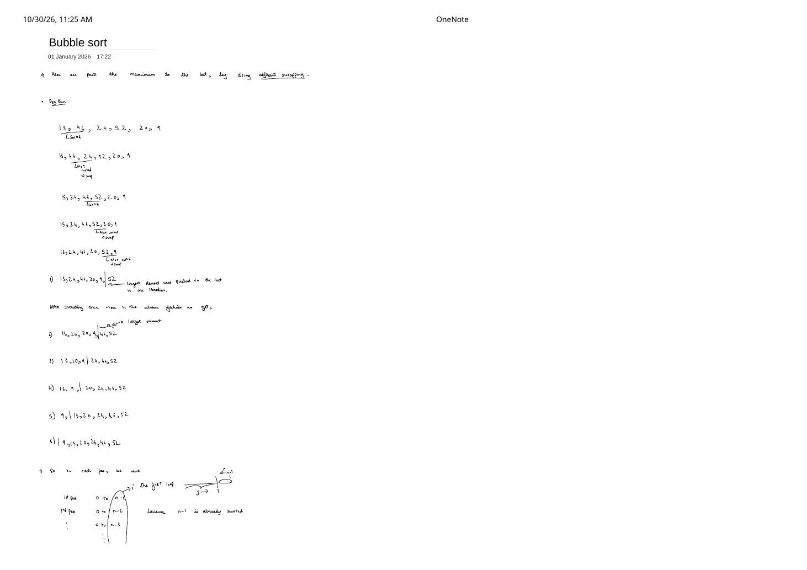
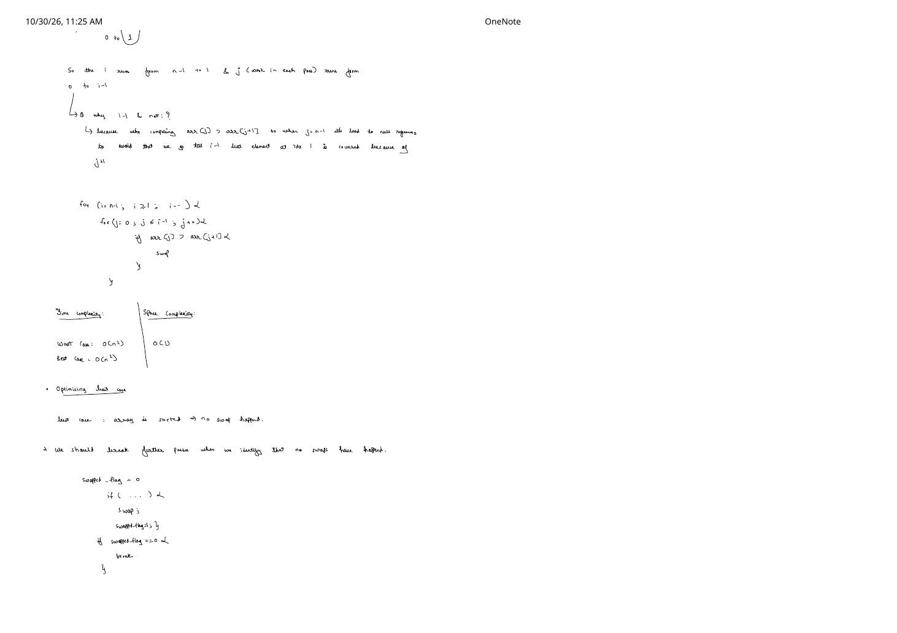

Bubble Sort: Adjacent Swaps & Early-Exit Optimization
Expanded from handwritten competitive coding study note: 01_Bubble_sort.pdf
Bubble Sort is built on a single local rule: push the maximum element of the active prefix to the very end by repeatedly comparing and swapping adjacent out-of-order pairs. Although its worst-case runtime is $\Theta(n^2)$, tracing how its unsorted boundary shrinks—and how a single boolean flag unlocks $O(n)$ best-case detection on sorted inputs—makes it an essential foundation for reasoning about loop invariants, boundary indices, and inversion counts.
1. Core Intuition & Sorted-Suffix Loop Invariant
Suppose we want to sort an array $\text{arr}[0 \dots n - 1]$ in non-decreasing order. In a single left-to-right sweep comparing $\text{arr}[j]$ with $\text{arr}[j + 1]$ and swapping whenever $\text{arr}[j] \gt \text{arr}[j + 1]$:
- As soon as the sweep encounters the largest element in the active range $[0 \dots i]$, that element wins every subsequent comparison against its right neighbor.
- Consequently, it gets carried ("bubbled") step-by-step all the way to index $i$, locking into its final sorted position!
Outer-Loop Invariant (Growing Sorted Suffix)
Before pass $i$ begins (where $i$ counts down $n - 1, n - 2, \dots, 1$):
- The suffix $\text{arr}[i + 1 \dots n - 1]$ already holds the $(n - 1 - i)$ largest elements of the entire array in their final sorted positions.
- Every element in the active prefix $\text{arr}[0 \dots i]$ is $\le$ every element in $\text{arr}[i + 1 \dots n - 1]$.
Once $i$ finishes $i = 1$, index $1$ holds the second-smallest element, which forces index $0$ to hold the global minimum—leaving the entire array sorted.
01_Bubble_sort.pdf: adjacent swaps carry the prefix maximum rightwards into the sorted suffix.2. Complete Pass-by-Pass Dry Run on [13, 46, 24, 52, 20, 9]
Page 1 of the handwritten note traces every adjacent check in Pass 1 on $\text{arr} = [13, 46, 24, 52, 20, 9]$ ($n = 6$), then records the array state after each shrinking pass (using | to mark the boundary before the sorted suffix):
All Five Passes on [13, 46, 24, 52, 20, 9]
- Pass 1 ($i = 5$, active range $0 \dots 5$, $j = 0 \dots 4$):
$(13, 46)$ ok $\to$ swap $(46, 24)$ $\to$ $(46, 52)$ ok $\to$ swap $(52, 20)$ $\to$ swap $(52, 9)$
Snapshot:13, 24, 46, 20, 9 | 52(52locked at index $5$; $3$ swaps) - Pass 2 ($i = 4$, active range $0 \dots 4$, $j = 0 \dots 3$):
$(13, 24)$ ok $\to$ $(24, 46)$ ok $\to$ swap $(46, 20)$ $\to$ swap $(46, 9)$
Snapshot:13, 24, 20, 9 | 46, 52(46locked at index $4$; $2$ swaps) - Pass 3 ($i = 3$, active range $0 \dots 3$, $j = 0 \dots 2$):
$(13, 24)$ ok $\to$ swap $(24, 20)$ $\to$ swap $(24, 9)$
Snapshot:13, 20, 9 | 24, 46, 52(24locked at index $3$; $2$ swaps) - Pass 4 ($i = 2$, active range $0 \dots 2$, $j = 0 \dots 1$):
$(13, 20)$ ok $\to$ swap $(20, 9)$
Snapshot:13, 9 | 20, 24, 46, 52(20locked at index $2$; $1$ swap) - Pass 5 ($i = 1$, active range $0 \dots 1$, $j = 0 \dots 0$):
swap $(13, 9)$
Snapshot:9 | 13, 20, 24, 46, 52$\implies$| 9, 13, 20, 24, 46, 52(fully sorted; $9$ total swaps!)
3. Loop Bounds & Brute $\to$ Optimal Progression
Why Does j Run Till i - 1 Instead of i?
Pages 1–2 derive the two nested loop ranges directly from the active pass windows:
- 1st pass covers indices $0 \text{ to } n - 1$
- 2nd pass covers indices $0 \text{ to } n - 2$ (because index $n - 1$ is already sorted)
- 3rd pass covers indices $0 \text{ to } n - 3$, $\dots$, down to the final pass covering $0 \text{ to } 1$.
So the outer variable i runs from n - 1 down to 1. Why must the inner variable j stop at i - 1 rather than i?
Out-of-Bounds Trap if j Reaches i
Inside the inner loop we compare arr[j] > arr[j + 1]. On the very first pass ($i = n - 1$), if $j$ were allowed to reach $i = n - 1$, arr[j + 1] would evaluate arr[n]—reading past the end of the array (out-of-bounds undefined behavior in C++)! Stopping at $j = i - 1$ makes the final comparison arr[i - 1] > arr[i], which safely covers index $i$ via j + 1.
Brute $\Theta(n^2)$ vs. Optimized $O(n)$ Early-Exit swapped Flag
In naive Bubble Sort (top of Page 2), both loops run unconditionally even if the input array is already sorted like [2, 5, 8, 12, 19]—wasting $\frac{n(n-1)}{2}$ comparisons. Notice, however, what happens during Pass 1 on a sorted array: zero swaps occur, because $\text{arr}[j] \le \text{arr}[j + 1]$ holds for every adjacent pair $j = 0 \dots n - 2$. By transitivity ($\text{arr}[0] \le \text{arr}[1] \le \dots \le \text{arr}[n-1]$), the entire array is proven sorted! Tracking swapped_flag per pass lets us break immediately whenever a pass completes with swapped_flag == 0.
#include <utility>
#include <vector>
// 1. Unoptimized Bubble Sort — Always Theta(n^2), even on already-sorted arrays
void bubbleSortNaive(std::vector<int>& arr) {
int n = static_cast<int>(arr.size());
for (int i = n - 1; i >= 1; --i) {
for (int j = 0; j <= i - 1; ++j) {
if (arr[j] > arr[j + 1]) {
std::swap(arr[j], arr[j + 1]);
}
}
}
}
// 2. Optimized Bubble Sort (Page 2) — Breaks early in O(n) when no swaps occur!
void bubbleSort(std::vector<int>& arr) {
int n = static_cast<int>(arr.size());
for (int i = n - 1; i >= 1; --i) {
int swapped_flag = 0;
for (int j = 0; j <= i - 1; ++j) {
if (arr[j] > arr[j + 1]) { // Strict '>' preserves relative order of equal keys!
std::swap(arr[j], arr[j + 1]);
swapped_flag = 1;
}
}
if (swapped_flag == 0) {
break; // Zero adjacent inversions remain -> array is sorted!
}
}
}Bonus optimization (Last-Swap Jump): If the last swap in a pass happened at index $j = \text{lastSwap}$, every element beyond $\text{lastSwap}$ was already in sorted order and $\ge$ everything to its left, so the next pass can jump $i$ directly down to $\text{lastSwap}$ instead of merely $i - 1$.
4. Time & Space Complexity Proof & Algorithmic Properties
Exact Comparison & Swap Counts
- Worst Case — Reverse-Sorted Array (e.g.,
[52, 46, 24, 20, 13, 9]): Every adjacent pair is inverted, so neither version breaks early: $$\text{Comparisons} = \text{Swaps} = (n - 1) + (n - 2) + \dots + 1 = \sum_{i=1}^{n-1} i = \frac{n(n - 1)}{2} = \mathbf{\Theta(n^2)}.$$ - Average Case — Random Permutation: Each of the $\binom{n}{2}$ index pairs $(p \lt q)$ is inverted with probability $1/2$, so Bubble Sort performs $\frac{1}{2}\binom{n}{2} = \frac{n(n-1)}{4}$ swaps on average $\implies \mathbf{\Theta(n^2)}$ time.
- Best Case — Already Sorted Array:
• Unoptimized: $\frac{n(n-1)}{2} = \Theta(n^2)$ comparisons, $0$ swaps.
• Withswapped_flag: Pass 1 runs $n - 1$ comparisons, seesswapped_flag == 0, and breaks $\implies \mathbf{\Theta(n)}$ time! - Auxiliary Space: $\mathbf{O(1)}$ — only loop counters
i,j,swapped_flag, and constant swap space.
| Property | Verdict | Why? |
|---|---|---|
| Stable? | Yes | Because we swap only on strict inequality arr[j] > arr[j + 1], two equal keys never cross past each other. (Using >= would break stability AND break the early-exit flag on arrays with duplicates!) |
| In-Place? | Yes | Mutates arr directly using $O(1)$ extra variables. |
| Adaptive? | Partially | With swapped_flag, it finishes in $O(n)$ on sorted arrays and in $O(k \cdot n)$ when small elements ("turtles") need to move left by at most $k$ positions—though a single minimum at the very end (e.g., [2, 3, 4, 5, 1]) still takes $n - 1$ passes ($\Theta(n^2)$) unlike Insertion Sort's $O(n)$! |
5. Key Edge Cases & Competitive Coding Pitfalls
- Empty or Single-Element Arrays ($n = 0$ or $n = 1$): Casting
arr.size()to signedint nensuresi = n - 1becomes-1or0, soi >= 1immediately evaluates tofalsewith zero iterations. Never writefor (size_t i = arr.size() - 1; i >= 1; --i)on an empty vector—unsigned0u - 1uwraps around toSIZE_MAX! - All-Equal Elements (
[7, 7, 7, 7]): With strict>,swapped_flagstays0on Pass 1 and exits in $O(n)$ time. If you mistakenly wrotearr[j] >= arr[j + 1],swapped_flagwould become1on every duplicate pair, degrading all-equal arrays from $O(n)$ back to $\Theta(n^2)$! - Inversion Count Equivalence: Every adjacent swap eliminates exactly one inversion $(p \lt q \text{ with } \text{arr}[p] \gt \text{arr}[q])$, which is why our dry run on
[13, 46, 24, 52, 20, 9]performed $3 + 2 + 2 + 1 + 1 = 9$ swaps—matching the array's exact inversion count ($I = 9$).
From the Handwritten Notes
View original handwritten page — Bubble Sort Page 1: Adjacent Swap Dry Run & Shrinking Pass Windows


01_Bubble_sort.pdf: bubbling 52 to the end in Pass 1 on [13, 46, 24, 52, 20, 9] and deriving pass ranges $n - 1, n - 2, \dots, 1$.View original handwritten page — Bubble Sort Page 2: Why j Stops at i - 1 & Early-Exit swapped_flag


01_Bubble_sort.pdf: preventing out-of-bounds reads via j <= i - 1, unoptimized $\Theta(n^2)$ complexity, and breaking early with swapped_flag.